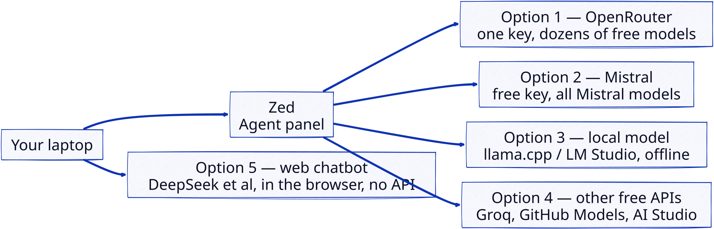
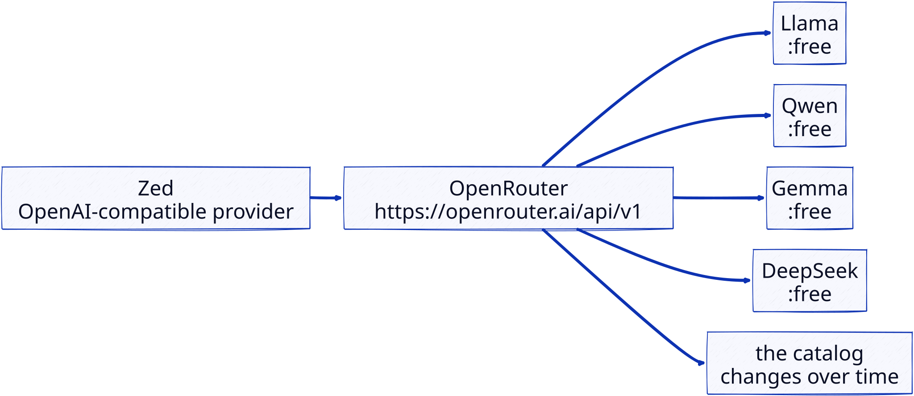
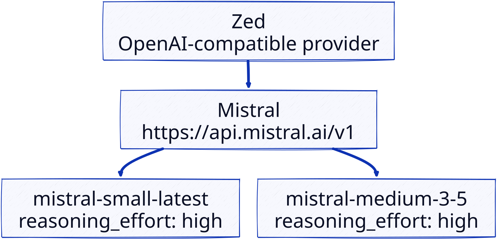

2 Prerequisites
For this module you need two basic tools (a code editor and a Python environment manager), plus, for Track A, access to a language model. All the options below are free; the effective limits of each offer are given (verified on 25/08/2026).
2.1 Editor: Zed
Zed is the editor used in the labs. It is free, fast, and includes a code assistant (Agent) that can be connected to any OpenAI-compatible API, including the free offers described below.
- Installation: https://zed.dev/ (macOS, Linux, Windows).
- No configuration is needed to write code; only the Agent panel must be connected to a model (see Track A tooling).
- (Optional) a free Zed account enables collaborative editing in channels (see Collaborative editing).
Why this editor? Zed is the meeting point of the two tracks of this module: a full code editor for Track B, and an Agent panel that hosts the tutoring LLM for Track A, in chat mode or as a coding agent that edits your files. Both modes live in the same window; you move from writing code to asking the tutor without changing tools, with the code still in view. This direct switch between tracks is what keeps the two learning paths close. A web chatbot lives outside the code, and a terminal-only agent (OpenCode, pi…) keeps the code out of the conversation.
Zed also uses few resources: it starts quickly and stays light on memory, which helps when the same machine also runs a local model (Option 3 below), since the editor and the model share the RAM. VS Code, for comparison, uses noticeably more.
2.2 Python environment management with uv
uv is the recommended Python environment manager. It installs the environment and packages in the current directory.
See the installation documentation for your platform. Then:
uv init # creates an environment in the current directory
uv add package # adds a package (replace package by its name)Run a script with a one-off dependency:
uv run --with dependance script.py2.3 Track A tooling: an AI tutor
Track A requires access to a large language model (LLM). Several options, all free, depending on your hardware and preferences; the kick-off survey distributed in session will help us calibrate this choice.
The choice of a model inside each option is subjective. It depends on your topics and your level, and on how you like to be guided (the language you write in matters too). Catalogs also change over time. The reliable way to decide is to test models yourself on real content of this module. A prompt to probe a model’s tutoring skills:
Act as a Socratic tutor for Python programming. I am a beginner.
Guide me with one question at a time; give me the answer only when
I am stuck. Keep your replies short.Run this prompt, then variants of your own, on the models you hesitate between, and judge on what a tutor does for you: does it let you think before it answers, and do its explanations hold? Some consoles compare models side by side on the same prompt (OpenRouter chat, Google AI Studio), which shortens the comparison.
Options 1–4 wire a model into Zed’s Agent panel through an OpenAI-compatible API; option 5 uses a chatbot in the browser, without Zed.

2.3.1 Option 1 — OpenRouter API (recommended)
OpenRouter is an aggregator: one API key gives access to dozens of models (Llama, Qwen, Gemma, DeepSeek, gpt-oss, Nemotron…) through a single OpenAI-compatible API.
:free models.
Set up the key in Zed
- Create an account at https://openrouter.ai/ (email or GitHub, no credit card).
- Generate an API key (the Keys page of your account).
- In Zed, add an OpenAI-compatible provider:
- URL:
https://openrouter.ai/api/v1 - Key: your OpenRouter key
- Model: open the Free Models collection and copy the identifier of a model whose ID ends with
:free(as of 25/08/2026: 17 models, e.g.z-ai/glm-5.2:free,cohere/north-mini-code:free,google/gemma-4-31b-it:free,nvidia/nemotron-3-ultra-550b-a55b:free). The catalog changes often: if a model disappears, the Free Models page lists the replacement. You can configure several models and switch from one to the other in the Agent panel.
- URL:
See this tutorial in French on the free OpenRouter models and how to exploit the free tier.
Free limits and when they change
The cap applies to the number of requests, not to tokens (as of 25/08/2026):
| Limit | Free account | After buying ≥ $10 of credits |
|---|---|---|
Cost per token (:free models) |
$0 | $0 |
| Requests per minute | 20 | 20 |
| Requests per day | 50 | 1,000 |
- The daily quota rises to 1,000/day as soon as the account has bought at least $10 of credits once (credits never expire); the increase stays even if the balance drops back to zero. A single $10 top-up on a class account is therefore enough.
- Free models are served at low priority: waiting may occur at peak hours, and the
:freemodel catalog changes regularly (some disappear, others appear); hence the value of configuring several models. - Failed requests (429 = limit reached) count towards the daily quota.
- In tokens, OpenRouter imposes no global quota on free models: the size of a request is bounded by the model’s context window (as of 25/08/2026: from 64k to 1M tokens, e.g.
z-ai/glm-5.2:freein 256k,nvidia/nemotron-3-ultra-550b-a55b:freein 1M) and the throughput (tokens/min) is set by each provider, often reduced at peak hours. Only the request counters (20/min, 50/day) are authoritative at the OpenRouter level. - Check the data policy of each provider: some free endpoints may train on your exchanges. Avoid sending sensitive data to them.
If each student creates their own OpenRouter account (2 minutes), each gets their own 50 requests/day; this is the simplest and safest option for a class.
2.3.2 Option 2 — Mistral API (free key)
Mistral “La Plateforme” offers a free Experiment plan: access to all models (Mistral Small, Medium, Large, Codestral, Magistral…), no credit card, but a phone verification is required.

Set up the key in Zed
- Create an account at https://console.mistral.ai/home and grab an API key. A valid phone number is required; warn the instructor if this is a problem.
- In Zed, add an OpenAI-compatible provider:
- URL:
https://api.mistral.ai/v1 - Key: your Mistral key
- Model:
mistral-small-latest(reasoning enabled withreasoning_effort: "high", see the troubleshooting below) ormistral-medium-3-5(more powerful, same mechanism).
- URL:
See this tutorial in French to get the free Experiment key and call the Mistral API from Python.
Free plan limits and data policy
The limits are approximate and unpublished (exact figures in the console, Limits section); about 1 billion tokens/month, ~500,000 tokens/min per model and ~1 request/s per API key (2 req/min according to some sources). The detailed quotas vary by model group (e.g. magistral: 20,000 tokens/min, 10 req/min). This plan is meant for experimentation, not production.
Free-plan requests may be used to train Mistral models (retention ~30 days, cf. their privacy policy); do not send sensitive code or exchanges.
For reasoning models, see the troubleshooting below.
2.3.3 Option 3 — Local model (if your machine allows it)
If you have at least ~16 GB of RAM (or a dedicated GPU with ~6 GB of VRAM) and ~10–20 GB of free disk space, you can run a local model with llama.cpp or LM Studio. A local model works offline and without any account; Zed connects to it as an OpenAI-compatible provider (http://localhost:11434/v1).
Pick the largest model that fits on your machine. A ~9B model (e.g. Qwen3.5-9B, the most intelligent under 10B on the Artificial Analysis Intelligence Index, 25/08/2026) is a reasonable minimum for a usable tutor, comfortable in 16 GB of RAM or ~6 GB of VRAM; a 14B is noticeably better if your RAM allows. A 4B model drops the Socratic role after a turn or two and answers tersely, and factual slips are more common. Quantized (Q4), the files weigh about 5 GB (a 9B) and 9 GB (a 14B).
Derivative fine-tunes are worth a look. Ornith-1.5-9B (MIT, August 2026) builds on the Qwen3.5-9B architecture and is trained with reinforcement-learning self-improvement; it often scores above its base on benchmarks and needs the same ~5 GB at Q4.
If your machine has room, consider a mixture-of-experts (MoE) model instead. An MoE stores many parameters and activates a fraction of them per token. Qwen3.6-35B-A3B stores ~35B and activates ~3B; llama.cpp keeps the inactive experts in RAM while the active ones use the GPU (--n-cpu-moe), so the model files may exceed your VRAM. At Q4 it weighs ~20 GB and scores 32 on the Artificial Analysis Intelligence Index (25/08/2026), well above the median of 9 for open models of its size. Expect lower speed when experts spill to RAM.
The kick-off survey (distributed in session) is precisely used to know who can run one.
If your machine is modest: don’t worry. Option 1 or 2 (free API) is enough to follow Track A. Track B, for its part, requires no AI tool at all.
2.3.4 Option 4 — Other free API offers
Three providers give free API access to language models and plug into Zed the same way (an OpenAI-compatible provider with an API key, like Options 1 and 2 above). Their catalogs and quotas change more often than OpenRouter’s; the figures below are rough (25/08/2026), verify the number you need on the official pricing page of the day.
| Provider | Models (selection) | OpenAI-compatible endpoint | Training on your prompts | Free limits (requests / tokens) |
|---|---|---|---|---|
| Groq | Open-weights: Llama, Qwen, DeepSeek-R1, gpt-oss, GLM | https://api.groq.com/openai/v1 |
No | ~30 req/min, ~1,000 req/day; ~6–12K tokens/min, ~100–200K tokens/day (per model) |
| GitHub Models | GPT-4.1, o3, o4-mini, Llama, Mistral, DeepSeek, Cohere, Grok | https://models.github.ai/inference |
No | ~10 req/min, ~50–150 req/day; 8,000 in / 4,000 out tokens per exchange |
| Google AI Studio | Gemini Flash, Flash-Lite | https://generativelanguage.googleapis.com/v1beta/openai/ |
Yes, on the free tier | ~15 req/min, ~1,500 req/day; 1M tokens/min per project |
A tutorial for each free offer:
Data policy is the deciding factor for a tutor. Prefer endpoints that do not train on your prompts: Groq and GitHub Models. Google AI Studio’s free tier may use your exchanges to improve Google’s models (its paid tier and Vertex AI do not); reserve it for exchanges that hold nothing sensitive.
Every free offer is rate-limited. Expect HTTP 429 under load; write your tutor scripts to retry with backoff, or queue exchanges for off-peak hours. The token ceilings often bind before the request counters.
Groq installs like Option 1 and exposes a wide, fast range of open models.
GitHub Models needs only a GitHub account and a Personal Access Token, no billing. The 8,000 input / 4,000 output token cap per exchange suits short Socratic dialogue, not long files.
Google AI Studio offers the largest free volume (Flash models); multimodal input works there out of the box.
Other free providers exist (Cloudflare Workers AI, Hugging Face serverless), but their OpenAI-compatible setup in Zed is less direct (account ID in the URL, different auth headers, cold starts), so they are left out here.
2.3.5 Option 5 — A web chatbot, as-is (no API key)
Instead of wiring an API into Zed, talk to a chatbot directly in a browser. This is the lowest-effort path: no API key and nothing to configure in Zed. The trade-offs: the tutor lives in the browser, and you must copy the exchanges into your logbook yourself (Zed does not see them).
Recommended: DeepSeek — free to use, no credit card, and a model that is openly competitive with the best closed ones for reasoning, which suits a Socratic tutor. Start each session by pasting your tutoring system prompt.
Other free web chatbots:
- Google Gemini — free access to Gemini models.
- Mistral Le Chat — the same Mistral models as Option 2.
- Qwen Chat — Alibaba’s open-weights model family.
- Microsoft Copilot — GPT-based assistant.
- ChatGPT — free tier, quota-limited.
- Claude — free tier, quota-limited.
As with the free APIs, check the data policy before sending anything sensitive: several web chatbots (DeepSeek, Gemini, Copilot) train on your conversations by default.
2.4 Troubleshooting: Mistral’s reasoning (“thinking”) does not show
Show the causes and the working examples
Three frequent causes:
- You use a model that does not reason, or an outdated name. Reasoning is now adjustable and is triggered by the
reasoning_effortparameter:- Concerned models:
mistral-small-latestandmistral-medium-3-5; they think only if you sendreasoning_effort: "high"(default ="none": no thinking). - The
magistral-*-latestnames (“native” reasoning, always on) are deprecated at Mistral (25/08/2026):magistral-small-latestnow resolves tomistral-small-latest, with adjustable reasoning. Prefermistral-small-latestwithreasoning_effort: "high". - The other models (Large, Codestral…) have no reasoning mode: sending them
reasoning_effortcauses an HTTP 422 error.
- Concerned models:
- The parameter is misplaced.
reasoning_effortis a root-level field of the Chat Completions request body (not inextra_body, not in a message). - The response format changes. With
reasoning_effort: "high",message.contentbecomes a list of chunks (ThinkChunkfor the trace, thenTextChunkfor the answer) instead of a string. Code that readscontentas a string “shows nothing” or crashes. Two useful details:- In streaming,
delta.contentchanges shape: a list ofThinkChunkduring the reflection, then a mixed list (end ofThinkChunk+ firstTextChunk) at the transition, then a plain string for the final answer. Code that always expects the same type “shows nothing” without crashing. - Be tolerant about chunking: depending on the model, the answer may contain empty
ThinkChunks interleaved withinTextChunks (a bug reported onmagistral-medium-latest). Keep only the text of theTextChunks and ignore the rest. - In multi-turn, send back in the history the complete assistant message (with its trace): removing the
ThinkChunkof previous turns degrades quality noticeably.
- In streaming,
Minimal working example (Python mistralai SDK):
from mistralai import Mistral
from mistralai.models import TextChunk
client = Mistral(api_key="YOUR_KEY")
resp = client.chat.complete(
model="mistral-small-latest",
messages=[{"role": "user", "content": "Explain the concept of a lock."}],
reasoning_effort="high",
)
content = resp.choices[0].message.content
if isinstance(content, str):
print(content) # reasoning_effort="none": plain string
else:
for chunk in content:
if isinstance(chunk, TextChunk):
print(chunk.text, end="") # ThinkChunks (trace) are ignoredSame in curl (the key in an environment variable MISTRAL_API_KEY):
curl https://api.mistral.ai/v1/chat/completions \
-H "Authorization: Bearer $MISTRAL_API_KEY" \
-H "Content-Type: application/json" \
-d '{"model":"mistral-small-latest","reasoning_effort":"high","messages":[{"role":"user","content":"Explain the concept of a lock."}]}'In Zed: declare Mistral as an OpenAI-compatible provider (https://api.mistral.ai/v1) and, for the model, set reasoning_effort to "high" in its configuration (available_models in the Agent settings). This setting activates the thinking and asks Zed to display the trace in the panel. On older versions of Zed, reasoning_effort could not be forwarded for OpenAI-compatible providers (bug fixed since); update Zed if the thinking does not show. Mistral returns the trace in message.content (chunks), not as a dedicated field: a tool that expects a plain string may display “nothing”. To see the trace in all circumstances, use a script (as above) or Mistral Le Chat.
2.5 Collaborative editing
Zed supports collaborative editing: a participant opens a channel (public or private) and the others join it with the link. Sessions may use this feature or the module’s Discord room (the exact channel will be given in the lab).
2.6 Running multiprocessing/asyncio in Jupyter
Under macOS, multiprocessing requires the spawn method in Jupyter notebooks; a fix that requires kernel-specific settings. The most robust approach is to run your scripts with uv run rather than in a notebook cell; the details are covered in the lab if needed.